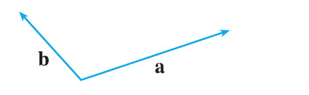

Copy the vectors in the figure and use them to draw the following vectors. (a) \(\mathbf{a} + \mathbf{b}\) (b) \(\mathbf{a} - \mathbf{b}\) (c) \(\frac{1}{2}\mathbf{a}\) (d) \(-3\mathbf{b}\) (e) \(\mathbf{a} + 2\mathbf{b}\) (f) \(2\mathbf{b} - \mathbf{a}\)